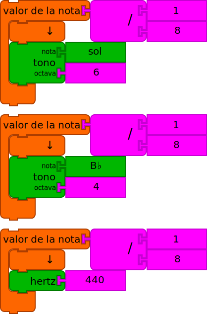
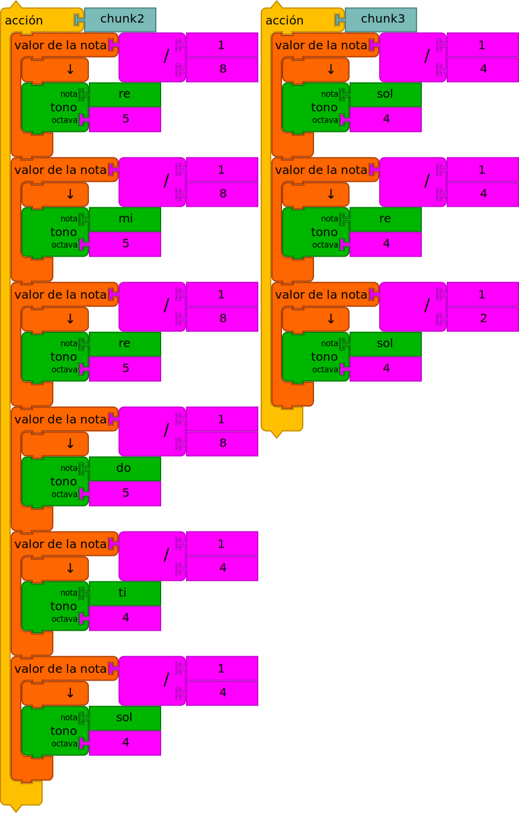

Guía de Programación con Bloques de Música
Bloques de Música es un entorno de programación para lqs niños interesados en música y gráficos. Se amplía la Tortugaarte en que tiene una colección de funciones relacionadas con el tono y el ritmo.
La guía de la Tortugaarte es un buen lugar para comenzar a aprender acerca de la lo esencial. En esta guía, se ilustran las características de la música que recorren la lector a través de numerosos ejemplos.
Empezando
Bloques de Música está diseñado para ejecutarse en un navegador. La mayor parte del desarrollo se ha hecho en Cromo, pero también debería funcionar en Firefox. Se puede ejecutar desde [Bloques de Música] (https://musicblocks.sugarlabs.org) o por la descarga de una copia del código y se ejecuta directamente desde el archivo sistema de su computadora.
Para más detalles sobre el uso de Bloques de Música, ver [Uso de Bloques de Música] (http://github.com/sugarlabs/musicblocks/tree/master/documentation) y para más detalles sobre cómo utilizar los bloques de la tortuga, ver [Uso de la tortuga bloques
ACERCA DE ESTA GUÍA
Esta guía se divide en cuatro secciones: (i) una descripción general de la Nota estructura; (ii) una guía de programación; (iii) los widgets que proporcionan alguna andamio para el programador; y (iv) una sección sobre la exportación de tu trabajar en otros sistemas de música.
Muchos de los ejemplos dados en la guía tienen enlaces a código que puede correr. Busque vínculos EJECUTAR EN VIVO.
I. NOTAS
Bloques musicales expuestos los elementos comunes de la música: el tono, el ritmo y la calidad de sonido, por ejemplo, el volumen y la suavidad, y en cierto grado, timbre y la textura.
En el corazón de los bloques de música es el bloque de Valores de Nota. El bloque de Valores de Nota es un contenedor para un campo que especifica la duración (valor de nota) del terreno de juego. (El bloque de Tono se detalla a continuación.)
En la parte superior del ejemplo anterior, un único Valores de
Nota es mostrado. El 1 / 8 es el valor de la nota, en este caso,
una corchea. los terreno de juego, a que el bloque de Tono, contiene
un lanzamiento, La en `4'Octave. En la parte inferior, dos notas que
se tocan son consecutivamente mostrado.
En este ejemplo, se muestran diferentes valores de las notas. De
arriba a abajo, 1 / 4'para un cuarto de nota, 1 / 16de una
semicorchea, y1/2` por una media Nota.

Como hemos visto, bloques de Tono se utilizan dentro del bloques de Valor de la Nota. El bloque Tono especifica un nombre de brea y octava que en combinación determinar la frecuencia con la que se toca una nota.
Puede conectar diferentes valores en el Tono nombre del bloque y
la octava ranuras. Algunos ejemplos se muestran arriba. A partir de la
parte superior, el terreno de juego nombre del bloque se especifica el
uso de un bloque de Solfeo ( Sol en Octava 6); el nombre de tono
se especifica el uso de un bloque Tono-nombre ( B en flat
Octava 4); el terreno de juego se especifica utilizando el bloque de
Hertz y una bloque de Número ( 440 Hertz).
La octava se especifica mediante un bloque de número y se limita a todos los números. En el caso en que el nombre de pitch se especifica por la frecuencia, la octava se ignora.
Tenga en cuenta que el nombre de tono también se puede especificar el uso de un bloque de Texto.
También tenga en cuenta que cualquier operación matemática se puede utilizar como entrada para el Valor de Nota.
Un acorde (múltiples, campos simultáneos) puede ser especificado por complemento Tono múltiples bloques a un valor de Nota contenedor.
Un resto de valor de la nota duración se puede construir usando un bloque de Silencio.
Usando tambores
En cualquier lugar donde puedas usar un bloque de Tono --por ejemplo, dentro de la matriz o un bloque de Valor de nota-- también puedes especificar una muestra de tambor. Actualmente hay alrededor de dos docenas de muestras diferentes para elegir. El tambor predeterminado es un bombo.
Al igual que en el ejemplo de acorde anterior, puedes usar múltiples bloques de Tambor dentro de un solo bloque de Valor de nota y combinarlos con bloques de Tono.
II. PROGRAMANDO CON MÚSICA
Esta sección de la guía discute cómo usar fragmentos de notas para programar música. Ten en cuenta que puedes programar con fragmentos que crees a mano o usar el widget Matriz de Tono-tiempo descrito en la Sección III.
1. Un fragmento de notas
Cada vez que creas una nueva pila de Acción, Bloques de Música crea un nuevo
bloque específico para esa pila. (El nuevo bloque se encuentra en la parte superior de
la paleta Bloque, que se encuentra en el borde izquierdo de la pantalla.) Hacer clic
en este bloque es lo mismo que hacer clic en tu pila. Por defecto, los
nuevos bloques se llaman chunk, chunk1, chunk2... pero puedes renombrarlos
editando las etiquetas en los bloques de Acción.
En el ejemplo anterior, el bloque Chunk está dentro de un bloque Empezar, lo que lo vincula al botón Ejecutar en la esquina superior izquierda de la pantalla (el "conejo"). Intenta hacer clic en el botón Ejecutar. También prueba el botón Ejecutar Lento (la "tortuga") y el botón Paso (el "caracol"), que recorre el programa un bloque por pulsación de botón. También hay botones para reproducir la música lentamente y para avanzar una nota por pulsación de botón.
Puedes repetir fragmentos ya sea usando múltiples bloques Chunk o usando un bloque Repetir.
También puedes mezclar y combinar fragmentos. Aquí tocamos chunk, seguido de chunk1 dos veces, y luego chunk de nuevo.

Unos cuantos fragmentos más y podemos hacer una canción. (¿Puedes leer la notación de bloques para adivinar qué canción hemos programado?)
2. Transformaciones
Hay muchas formas de transformar el tono, el ritmo y otras cualidades del sonido.
El bloque Paso de Tono moverá hacia arriba o hacia abajo las notas en una escala desde la nota actual. En el ejemplo anterior, los bloques Paso de Tono se usan dentro de bloques Repetir para tocar hacia arriba y hacia abajo en una escala.
Los bloques Sostenido y Bemol pueden envolver bloques de Tono,
bloques de Valor de nota, o fragmentos. Un sostenido elevará el tono en
medio paso. Un bemol lo bajará en medio paso. En el ejemplo, a la
izquierda, solo el bloque de Tono Mi se baja medio paso;
a la derecha, ambos bloques de tono se elevan medio paso.
El bloque Ajustar-transposición se puede usar para hacer cambios más grandes en el tono. Para desplazar una octava completa, transponer 12 medios pasos hacia arriba. -12 desplazará una octava hacia abajo.
En el ejemplo anterior, tomamos la canción que programamos anteriormente y la elevamos una octava.
Puedes "puntear" notas usando el bloque Puntillo. Una nota con puntillo se extiende un 50%. Por ejemplo, una negra con puntillo sonará por 3/8 (1/4 + 1/8) de un tiempo. Una corchea con puntillo sonará por 3/16 (1/8 + 1/16) de un tiempo.
También puedes multiplicar (o dividir) el valor del tiempo, lo que acelerará
o ralentizará las notas. Multiplicar el valor del tiempo de una nota 1/8 por
2 es el equivalente a tocar una nota 1/16. Dividir el valor del
tiempo de una nota 1/8 por '2' es el equivalente a tocar una nota 1/4.
Hay varias formas de repetir notas. El bloque Repetir tocará una secuencia de notas múltiples veces; el bloque Duplicar repetirá cada nota en una secuencia.
En el ejemplo, a la izquierda, el resultado sería Sol, Re, Sol, Sol,
Re, Sol, Sol, Re, Sol, Sol, Re, Sol; a la derecha el resultado sería
Sol, Sol, Sol, Sol, Re, Re, Re, Re, Sol, Sol, Sol, Sol.
El bloque Swing funciona en pares de notas (especificadas por valor de nota), añadiendo algo de duración (especificada por valor de swing) a la primera nota y quitando la misma cantidad a la segunda nota. Las notas que no coinciden con el valor de nota no cambian.
En el ejemplo, re5 se tocaría como una nota 1/6 y me5 se
tocaría como una nota 1/12 (1/8 + 1/24 === 1/6 y 1/8 - 1/24 ===
1/12). Observa que la duración total del par de notas no
cambia.
La ligadura también funciona en pares de notas, combinándolas en una sola nota. (Las notas deben ser idénticas en tono, pero pueden variar en ritmo.)
El bloque Establecer volumen cambiará el volumen de las notas. El predeterminado es 50; el rango es 0 (silencio) a 100 (volumen máximo).
El bloque Crescendo aumentará (o disminuirá) el volumen de las notas contenidas en una cantidad especificada.
El bloque Staccato reproducirá notas en ráfagas cortas mientras mantiene el valor rítmico especificado de las notas.
El bloque Ligadura de expresión extenderá una nota más allá de su duración anotada, mezclándola con la siguiente nota.

El bloque Intervalo calcula un intervalo relativo, por ejemplo, una quinta, y añade
los tonos adicionales a una nota. En la figura, añadimos Sol a Do y
Do a Fa.
El bloque Articulación cambia el volumen de un grupo de notas.
El bloque Aumentado calcula un intervalo absoluto, por ejemplo, una quinta aumentada, y añade los tonos adicionales a una nota. De manera similar, el bloque Menor calcula un intervalo absoluto, por ejemplo, una tercera menor. Otros intervalos absolutos incluyen Perfecto, Disminuido, y Mayor.
En el ejemplo de quinta aumentada anterior, se toca un acorde de D5 y A5, seguido de un acorde de E5 y C5. En el ejemplo de tercera menor, que incluye un cambio de una octava, primero se toca un acorde de D5 y F5, seguido de un acorde de E5 y G6.
El bloque Invertir invertirá una serie de notas alrededor de una nota
objetivo. Hay dos versiones diferentes del bloque Invertir: impar
y par, este último desplaza el punto de rotación hacia arriba en un paso de 1/4,
permitiendo la rotación alrededor de un punto entre dos notas.
En el ejemplo invertir (par), D4 se invierte alrededor de G4,
resultando en un C5. En el ejemplo invertir (impar), D4 se invierte
alrededor de un punto medio entre G4 y G♯4 resultando en un C♯5
El bloque Hacia atrás tocará las notas contenidas en orden inverso
(retrógrado). En el ejemplo anterior, las notas en Chunk se tocan como
Sol, Ti, La, Sol, es decir, desde la parte inferior hasta la superior de la
pila.
Ten en cuenta que todos los bloques dentro de un bloque Hacia atrás se invierten, así que usa esta función con precaución si incluyes lógica entremezclada con notas.
El bloque Establecer Voz selecciona una voz para el sintetizador para cualquier bloque contenido, por ejemplo, violín o violonchelo.
El bloque Establecer Tonalidad cambiará la tonalidad y el modo del mapeo
entre solfeo, por ejemplo, Do, Re, Mi, a nombres de notas, por ejemplo, C,
D, E, cuando está en Do Mayor. Los modos incluyen Mayor y Menor, Cromático,
y una serie de modos más exóticos, como Bebop, Geez, Maqam, et al.

En el ejemplo anterior, la secuencia de golpes de tambor aumenta con el tiempo.
3. Voces
Cada bloque Empezar se ejecuta como una voz separada en Bloques de Música. (Cuando haces clic en el botón Ejecutar, todos los bloques Empezar se ejecutan simultáneamente.)
Si ponemos nuestra canción en una acción...
...podemos ejecutarla desde múltiples bloques Empezar.
Se vuelve más interesante si desplazamos octavas hacia arriba y hacia abajo.
Y aún más interesante si traemos las diversas voces desfasadas en el tiempo.
Una versión especial de "tambor" del bloque Empezar está disponible para establecer
una pista de batería. Cualquier bloque de tono encontrado mientras se inicia desde un
tambor se tocará como C2 con la muestra de tambor predeterminada. En el
ejemplo anterior, todas las notas en chunk se tocarán con un bombo.
4. Añadiendo gráficos
Los gráficos de tortuga se pueden combinar con los bloques de música. Colocando bloques de gráficos, por ejemplo, Adelante y Derecha, dentro de bloques de Valor de nota, los gráficos se mantienen sincronizados con la música. En este ejemplo, la tortuga avanza cada vez que se toca una negra. Gira a la derecha durante la corchea. El tono se eleva medio paso, el tamaño de la pluma disminuye y el color de la pluma aumenta en cada paso en el bucle de repetición interno.
En este ejemplo, los gráficos se sincronizan con la música colocando los comandos de gráficos dentro de bloques de Valor de nota.
En este ejemplo, debido a que el cálculo y los gráficos son más complejos, se usa un bloque Tiempo libre para desacoplar los gráficos del reloj maestro.

5. Interacción
Hay muchas formas de interactuar con Bloques de Música, incluyendo rastrear la posición del ratón para impactar algún aspecto de la música.
Por ejemplo, podemos lanzar las frases (fragmentos) interactivamente. Cuando
el ratón está en el cuadrante inferior izquierdo, se toca chunk;
cuadrante inferior derecho, chunk1; cuadrante superior izquierdo, chunk2; y
cuadrante superior derecho, chunk3.
En el ejemplo anterior, se crea un piano simple de dos teclas asociando eventos de clic en dos tortugas diferentes con notas individuales. ¿Puedes hacer un piano de 8 teclas?
También puedes añadir un poco de aleatoriedad a tu música. En el ejemplo superior
anterior, el bloque Uno-de se usa para asignar aleatoriamente Do o
Re cada vez que se toca el bloque Valor de nota. En el ejemplo inferior
anterior, el bloque Uno-de se usa para seleccionar aleatoriamente entre chunk1
y chunk2.
III. WIDGETS
1. Estado
El Widget de Estado es una herramienta para inspeccionar el estado de Bloques de Música mientras se está ejecutando. Por defecto, se muestran la tonalidad, BPM y volumen. Además, cada nota se muestra a medida que se toca. Hay una fila por voz en la tabla de estado.
Se pueden añadir bloques Imprimir adicionales al widget Estado para mostrar factores musicales adicionales, por ejemplo, duplicar, transposición, saltar, staccato, ligadura, y factores gráficos, por ejemplo, x, y, rumbo, color, sombra, gris y tamaño de pluma.
Puedes hacer programación adicional dentro del bloque de estado. En el ejemplo anterior, el volumen se divide por 10 antes de mostrarse.
2. La Matriz de Tono-Tiempo
Bloques de Música proporciona un widget, la Matriz de Tono-tiempo, como un andamio para empezar.
Una vez que hayas lanzado Bloques de Música en tu navegador, comienza haciendo clic en la pila Matriz de Tono-tiempo que aparece en el medio de la pantalla. (Por el momento, ignora el bloque Empezar.) Verás una cuadrícula organizada verticalmente por tono y horizontalmente por ritmo.
La matriz en la figura anterior tiene tres bloques de Tono y un bloque de Ritmo, que se usa para crear una cuadrícula de 3 x 3 de tono y tiempo.
Ten en cuenta que la matriz predeterminada tiene cinco bloques de Tono, por lo tanto, verás cinco filas, una para cada tono. (Una sexta fila en la parte inferior se usa para especificar los ritmos asociados con cada nota.) También por defecto, hay dos bloques de Ritmo, que especifican seis negras seguidas de una blanca. Dado que los bloques de Ritmo están dentro de un bloque Repetir, hay catorce (2 x 7) columnas para seleccionar notas.
Al hacer clic en celdas individuales en la cuadrícula, deberías escuchar
notas individuales (o acordes si haces clic en más de una celda en una
columna). En la figura, se seleccionan tres negras (celdas
negras). Primero Re 4, seguido de Mi 4, seguido de Sol 4.
img src='../../header-icons/play-button.svg' height="36"</img
{kind=link}
Si haces clic en el botón Reproducir (que se encuentra en la fila superior de la cuadrícula),
escucharás una secuencia de notas tocadas (de izquierda a derecha): Re 4,
Mi 4, Sol 4.
img src='../../header-icons/export-chunk.svg' height="36"</img
{kind=link}
Una vez que tengas un grupo de notas (un "fragmento") que te guste, haz clic en el botón Guardar (justo a la derecha del botón Reproducir). Esto creará una pila de bloques que se pueden usar para tocar estas mismas notas programáticamente. (Más sobre esto a continuación.)
Puedes reorganizar las notas seleccionadas en la cuadrícula y guardar otros fragmentos también.
img src='../../header-icons/sort.svg' height="36"</img
{kind=link}
El botón Ordenar reordenará los tonos en la matriz de mayor a menor y eliminará cualquier bloque de Tono duplicado.
img src='../../header-icons/close-button.svg' height="36"</img
{kind=link}
O ocultar la matriz haciendo clic en el botón Cerrar (el botón más a la derecha en la fila superior de la cuadrícula.)
img src='../../header-icons/erase-button.svg' height="36"</img
{kind=link}
También hay un botón Borrar que limpiará la cuadrícula.
No te preocupes. Puedes volver a abrir la matriz en cualquier momento (recordará su estado anterior) y dado que puedes definir tantos fragmentos como quieras, siéntete libre de experimentar.
Consejo: Puedes poner un fragmento dentro de un bloque Matriz de Tono-tiempo para generar la matriz que corresponde a ese fragmento.
El fragmento creado cuando haces clic en la matriz es una pila de
bloques. Los bloques están anidados: un bloque Acción contiene tres bloques Valor de nota,
cada uno de los cuales contiene un bloque Tono. El bloque Acción tiene un
nombre generado automáticamente por la matriz, en este caso, chunk. (Puedes
renombrar la acción haciendo clic en el nombre.). Cada nota tiene una
duración (en este caso 4, que representa una negra). Intenta
poner diferentes números y ve (escucha) qué sucede. Cada bloque de nota
también tiene un bloque de tono (si fuera un acorde, habría
múltiples bloques de Tono anidados dentro de la abrazadera del bloque de Nota). Cada
bloque de tono tiene un nombre de tono (Re, Mi, y Sol), y una octava de tono; en
este ejemplo, la octava es 4 para cada tono. (Intenta cambiar los nombres de tono
y las octavas de tono.)
Para tocar el fragmento, simplemente haz clic en el bloque de acción (en la palabra acción). Deberías escuchar las notas tocar, ordenadas de arriba a abajo.
Acerca del Bloque de Ritmo
Los bloques de Ritmo se usan para generar patrones de ritmo en el bloque Matriz de Tono-tiempo. El argumento superior al bloque Ritmo es el número de notas. El argumento inferior es la duración de la nota. En el ejemplo superior anterior, se generarían tres columnas para negras en la matriz. En el ejemplo del medio, se generaría una columna para una corchea. En el ejemplo inferior, se generarían siete *columnas para semicorcheas.
Puedes usar tantos bloques de Ritmo como quieras dentro del bloque Matriz de Tono-tiempo. En el ejemplo anterior, se usan dos bloques Ritmo, resultando en tres negras y seis corcheas.
Creando Tuplets
Los tuplets son una colección de notas que se escalan a una duración específica. Usar tuplets hace que sea fácil crear grupos de notas que no se basan en una potencia de 2. En el ejemplo anterior, tres negras --definidas en el bloque Ritmo-- se tocan en el tiempo de una sola negra. El resultado son tres notas de un doceavo.
Puedes mezclar y combinar bloques de Ritmo y bloques de Tuplet cuando defines tu matriz.
Usando notas individuales en la matriz
También puedes usar notas individuales al definir la cuadrícula. Estos bloques se expandirán en bloques de Ritmo con los valores correspondientes.
3. Generando Ritmos
El bloque Regla de Ritmo se usa para lanzar un widget similar al bloque Matriz de Tono-tiempo, que se puede usar para generar patrones rítmicos.
El argumento al bloque Regla de Ritmo especifica la duración que se subdividirá para generar un patrón rítmico. Por defecto, es 1 / 1, por ejemplo, una redonda.
Los bloques Establecer Tambor contenidos en la abrazadera del bloque Regla de Ritmo definen el número de ritmos que se definirán simultáneamente. Por defecto, se definen dos ritmos. Los bloques Ritmo incrustados definen la subdivisión inicial de cada regla de ritmo.
Cuando se hace clic en el bloque Regla de Ritmo, se abre el widget Regla de Ritmo. Contiene una fila para cada regla de ritmo. Una entrada en la fila superior del widget se usa para especificar cuántas subdivisiones se crearán dentro de una celda cuando se haga clic. Por defecto, se crean 2 subdivisiones.
Como se muestra en la figura anterior, la regla de ritmo superior se ha dividido en dos blancas y la regla de ritmo inferior se ha dividido en tres notas de un tercio. Al hacer clic en el botón Reproducir a la izquierda de cada fila se reproducirá el ritmo usando un tambor para cada tiempo. El botón Reproducir todo en la parte superior izquierda del widget reproducirá todos los ritmos simultáneamente.
El ritmo se puede subdividir aún más haciendo clic en celdas individuales. En el ejemplo anterior, se han creado dos negras haciendo clic en una de las blancas.
El botón Guardar pila exportará pilas de ritmo.
Estas pilas de ritmos se pueden usar para definir patrones rítmicos usados con el bloque Matriz de Tono-tiempo.
El botón Guardar máquina de tambores exportará pilas Empezar que tocarán los ritmos como máquinas de tambores.
4. Modos Musicales
Los modos musicales se usan para especificar la relación entre intervalos (o pasos) en una escala. Dado que la música occidental se basa en 12 medios pasos por octava, los modos especifican cuántos medios pasos hay entre cada nota en una escala.
Por defecto, Bloques de Música usa el modo Mayor, que, en la Tonalidad de
C, se asigna a las teclas blancas de un piano. Los intervalos en el modo Mayor
son 2, 2, 1, 2, 2, 2, 1. Muchos otros modos comunes están
incorporados en Bloques de Música, incluyendo, por supuesto, el modo Menor, que
usa 2, 1, 2, 2, 1, 2, 2 como sus intervalos.
Ten en cuenta que no todos los modos usan 7 intervalos por octava. Por ejemplo, el
modo Cromático usa 11 intervalos: 1, 1, 1, 1, 1, 1, 1, 1, 1,
1, 1, 1. El modo Japonés usa solo 5 intervalos: 1, 4,
2, 3, 2],. Lo importante es que la suma de los intervalos
en una octava es 12 medios pasos.
El widget Modo te permite explorar modos y generar modos personalizados. Invocas el widget con el bloque Modo personalizado. El modo especificado en el bloque Establecer tonalidad será el modo predeterminado cuando el widget se inicie.
En el ejemplo anterior, el widget se ha lanzado con el modo Mayor (el predeterminado). Ten en cuenta que las notas incluidas en el modo se indican mediante los cuadros negros, que están dispuestos en un patrón circular de doce medios pasos para completar la octava.
Dado que los intervalos en el modo Mayor son 2, 2, 1, 2, 2, 2, 1, las
notas son 0, 2, 4, 5, 7, 9,11, y 12 (una octava
por encima de 0).
Los controles del widget se encuentran a lo largo de la barra de herramientas en la parte superior. De izquierda a derecha son:
Reproducir todo, que tocará una escala usando el modo actual;
Guardar, que guardará el modo actual como el modo Personalizado y guardará una pila de bloques de Tono que se pueden usar con el bloque Matriz de Tono-tiempo;
Rotar en sentido antihorario, que rotará el modo en sentido antihorario (Ver el ejemplo a continuación);
Rotar en sentido horario, que rotará el modo en sentido horario (Ver el ejemplo a continuación);
Invertir, que invertirá el modo (Ver el ejemplo a continuación);
Deshacer, que restaurará el modo a la versión anterior; y
Cerrar, que cerrará el widget.
También puedes hacer clic en notas individuales para activarlas o desactivarlas.
Ten en cuenta que el modo dentro del bloque Modo personalizado se actualiza cada vez que el modo se cambia dentro del widget.

En el ejemplo anterior, el modo Mayor se ha rotado en sentido horario, transformándolo en Dórico.
En el ejemplo anterior, el modo Mayor se ha rotado en sentido antihorario, transformándolo en Locrio.
En el ejemplo anterior, el modo Mayor se ha invertido, transformándolo en Frigio.
Nota: Los modos incorporados en Bloques de Música se pueden encontrar en (musicutils.js)[https://github.com/sugarlabs/musicblocks/blob/master/js/utils/musicutils.js#L68].
El botón Guardar exporta una pila de bloques que representan el modo que se puede usar dentro del bloque Matriz de Tono-tiempo.
5. La Matriz de Tono-Tambor
El bloque Establecer Tambor se usa para mapear los tonos encerrados en sonidos de
tambor. Los sonidos de tambor se tocan en un monotono usando la muestra de tambor
especificada. En el ejemplo anterior, un bombo se sustituirá por
cada ocurrencia de un Re 4.
Como un expediente para crear mapeo con el bloque Establecer Tambor, proporcionamos la Matriz Tambor-Tono. La usas para mapear entre tonos y tambores. La salida es una pila de bloques Establecer Tambor.
6. Generando Tonos usando Proporciones Musicales
El bloque Escalera de Tonos se usa para lanzar un widget similar a la Matriz de Tono-tiempo, que se puede usar para generar diferentes tonos usando un tono dado y una proporción musical.
Los bloques Tono contenidos en la abrazadera del bloque Escalera de Tonos definen los tonos que se inicializarán simultáneamente. Por defecto, se define un tono y tiene la nota predeterminada "la" y octava "3".
Cuando se hace clic en el bloque Escalera de Tonos, se inicializa el widget Escalera de Tonos. El widget contiene una fila para cada bloque Tono contenido en la abrazadera del bloque Escalera de Tonos. Los campos de entrada en la fila superior del widget especifican la proporción musical que se usará para crear nuevos tonos en la escalera. Las entradas corresponden al numerador y denominador en la proporción respectivamente. Por defecto, la proporción es 3:2.
Al hacer clic en el botón Reproducir a la izquierda de cada fila se reproducirá la nota asociada con ese paso en la escalera. El botón Reproducir todo en la parte superior izquierda del widget reproducirá todos los pasos de tono simultáneamente. Un segundo botón Reproducir todo a su derecha toca la escalera primero en orden creciente de frecuencia y luego en orden decreciente de frecuencia.
El botón Guardar pila exportará pilas de tonos. Por ejemplo, en la configuración, la salida es como se muestra a continuación:
Estas pilas se pueden usar con el bloque Matriz de Tono-tiempo para definir las filas en la matriz.
7. Entendiendo el Tempo
El bloque Tempo se usa para lanzar un widget que nos permite visualizar el Tempo, definido como pulsos por minuto (BPM). Cuando se hace clic en el bloque Tempo, se inicializa el widget Tempo.
El bloque Pulsos Maestros por Minuto contenido en la abrazadera del bloque Tempo establece el tempo inicial usado por el widget. Esto determina la velocidad a la que la bola en el widget se mueve de un lado a otro. Si BPM es 60, entonces tomará un segundo para que la bola se mueva a través del widget. Un viaje de ida y vuelta tomaría dos segundos.
La fila superior del widget contiene el botón Reproducir/pausa, los botones Acelerar y Ralentizar, y un campo de entrada para actualizar el Tempo.
También puedes actualizar el tempo haciendo clic dos veces seguidas en el widget: el nuevo BPM se determina a partir del tiempo entre clics. Por ejemplo, si hay 1/2 segundo entre clics, el nuevo BPM es 120.
8. Creando Tonos con frecuencias continuamente variables
El bloque Deslizador de Tono se usa para lanzar un widget que se usa para generar tonos arbitrarios. Difiere del widget Escalera de Tonos en que se usa para crear frecuencias que varían continuamente dentro del rango de una octava especificada.
Cada bloque Seno contenido dentro de la abrazadera del bloque Deslizador de Tono define el tono inicial para una octava.
Cuando se hace clic en el bloque Deslizador de Tono, se inicializa el widget Deslizador de Tono. El widget tendrá una columna para cada bloque Seno en la abrazadera. Cada columna tiene un control deslizante que se puede usar para subir o bajar en frecuencia, continuamente o en intervalos de 1/12 de la frecuencia inicial. Para el caso continuo se usa el ratón. Los botones se usan para intervalos. Las teclas de flecha también se pueden usar para moverse hacia arriba y hacia abajo, o entre columnas.
Hacer clic en una columna extraerá los bloques Nota correspondientes, por ejemplo:
IV. MÁS ALLÁ DE BLOQUES DE MÚSICA
Bloques de Música es un punto de paso, no un destino. Uno de los objetivos es apuntar al aprendiz hacia otras herramientas poderosas. Una de esas herramientas es Lilypond, un programa de grabado musical.
El bloque Guardar como Lilypond transcribirá tu composición. La
salida del programa anterior se guarda en Downloads/hotdog.ly. También hay
un botón Guardar como Lilypond en la barra de herramientas secundaria.

\version "2.18.2"
mouse = {
c'8 c'8 c'8 c'8 c'4 c'4 g'8 g'8 g'8 g'8 g'4 g'4 a'8 a'8 a'8 a'8 a'4
a'4 g'8 g'8 g'8 g'8 g'4 g'4 f'8 f'8 f'8 f'8 f'4 f'4 e'8 e'8 e'8 e'8
e'4 e'4 d'8 d'8 d'8 d'8 d'4 d'4 c'8 c'8 c'8 c'8 c'4 c'4
}
\score {
<<
\new Staff = "treble" {
\clef "treble"
\set Staff.instrumentName = #"mouse" \mouse
}
>>
\layout { }
}